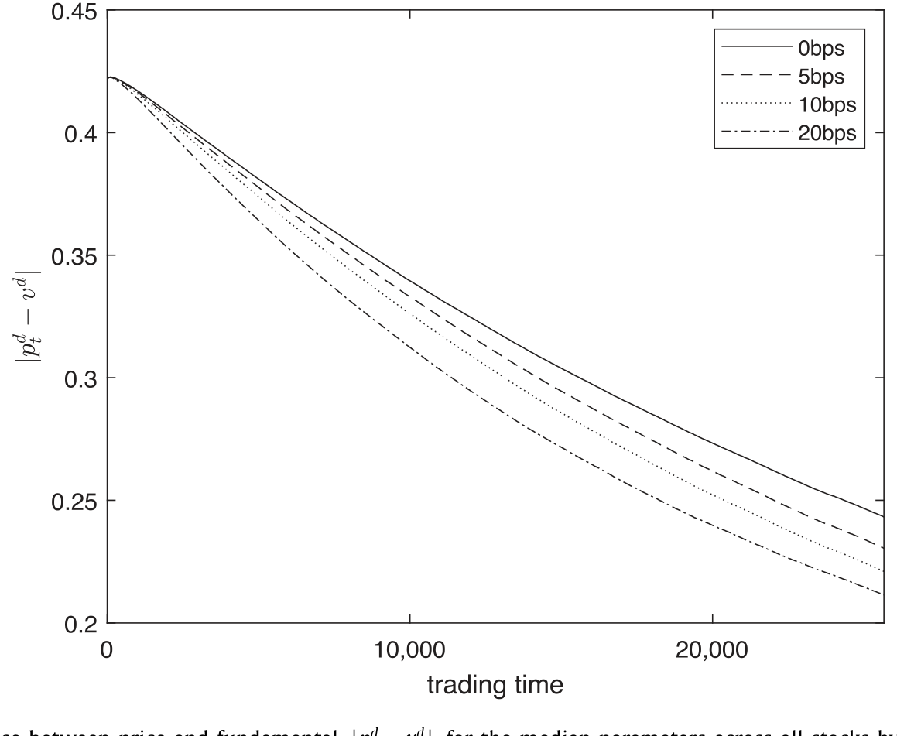
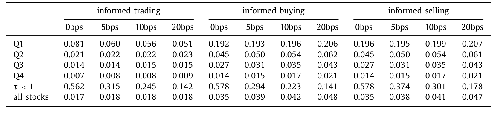
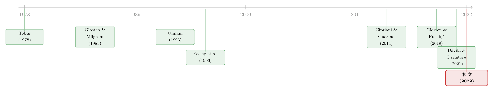

给市场收一笔「降噪费」：交易税真能让价格更聪明吗？
本文读的是 Cipriani, Guarino & Uthemann (2022, Journal of Financial Economics)：他们没有去找一次真实的征税事件做双重差分，而是把一个带「价格弹性噪声交易者」的序贯交易模型，用极大似然法在 2017 年 60 只 NYSE 股票上做了结构估计 (structural estimation)，再用估出来的参数去做反事实。结论出人意料地一分为二——一笔金融交易税 (financial transaction tax, FTT) 确实会提高知情交易的占比、改善信息聚合，但同时压低成交量与社会福利；而对于一部分流动性差的小盘股，它反而会彻底掐断私人信息的聚合，让价格永远到不了基本面。
1 一个三百年的老问题
先讲一段听上去不像金融学的历史。1694 年，英国为了筹钱打法国，开征了印花税 (Stamp Duty)——这是人类历史上第一笔金融交易税，几经修订，至今仍在伦敦的股票交易里收着。两百多年后，凯恩斯在《通论》里旧事重提，说股市里有太多与基本面无关的投机，应该用一笔税把它摁下去。再后来，托宾 (Tobin, 1978) 接过这根接力棒，提出对所有外汇交易征 1% 的税——这就是后世挂在嘴边的「托宾税 (Tobin tax)」。
这条主张的内核非常朴素：市场里有太多不基于基本面的「噪声交易 (noise trading)」，它推高了波动、污染了价格。一笔交易税主要会打击那些投资期限很短的投机者，而对长期投资者几乎无害。砍掉噪声、留下信息，于是市场会更干净。
听起来很美。可问题是，真的会这样吗？
反对的声音同样有力。Edwards (1993)、Schwert and Seguin (1993) 提醒我们：恰恰是那些知情交易者在抵消噪声、稳定市场；你给交易过程加一道摩擦，减慢的是价格发现 (price discovery)，抬高的是买卖价差，最后波动率不降反升。Kupiec (1996) 干脆从模型里推出来：FTT 会增大价格波动、降低市场流动性。
于是我们站在了一个尴尬的位置：两派都讲得头头是道，谁也说服不了谁。
2 理论说「不知道」，经验研究说「一半」
接着，一个自然的问题是：那就去看数据吧。可数据也没能给个痛快话。
先说理论这一头。最近一拨理论文献几乎异口同声地承认：FTT 对市场结果的总效应在理论上是不确定的。Dávila and Parlatore (2021) 在一个 CARA-正态的框架里证明，税收对价格信息含量的影响，取决于知情者与噪声者（套保者）相对的需求弹性。Sørensen (2017) 在单期的 Glosten–Milgrom 模型里研究市场构成与福利，结论同样是「看参数」：税收既可能因为挤出知情者、收窄价差而降低噪声者的交易成本，也可能因为价差加税后总成本更高而抬高它。净效应，取决于双方弹性的高低。
再看经验这一头。现有研究大多是事件研究 (event study) 或双重差分 (difference-in-differences, DiD)，它们只部分地化解了理论上的暧昧。有一件事是板上钉钉的：FTT 几乎一定压低成交量。最经典的案例是 1986 年瑞典的交易税——它把 11 只交易最活跃的瑞典股票里 60% 的成交量赶去了伦敦 (Umlauf, 1993)；Colliard and Hoffmann (2017) 在法国 2012 年那笔税上也看到了对成交量的类似冲击。可一旦问到别的——比如波动率——答案就散了：有人说降 (Umlauf, 1993; Jones and Seguin, 1997)，有人说没影响、甚至说升 (Colliard and Hoffmann, 2017; Deng et al., 2018)。
问题出在哪儿？DiD 能告诉你「征税前后某个可观测指标变了多少」，但它给不了你反事实：换一个税率会怎样？被赶走的到底是噪声者多还是知情者多？市场参与者的信念和偏好又是如何被改写的？这些藏在价格背后的东西，事件研究的尺子量不到。
但真正关键的一步，是换一把尺子。
3 换一把尺子：把模型「估」出来
本文的做法，是把市场微观结构模型结构估计出来。一旦你有了一组能解释真实成交数据的参数，整个市场就变成了一个可以反复重跑的「实验室」：把税率从 0 调到 5 个、10 个基点，看成交量、价差、波动率、信息效率、福利各自怎么动。这是 DiD 永远做不到的事——你可以在不发生真实征税的情况下，衡量征税的后果。（关于「用结构模型替代简约回归、再做反事实」这条路数，可参见《把结构模型「蒸馏」成一张查找表：深度代理与期权定价》。）
那么模型该长什么样？这里有一个绕不过去的坎。以往对微观结构模型的结构估计——比如 Easley et al. (1996, 1997) 以及之后那一大片关于 PIN（知情交易概率，probability of informed trading）的文献——里面的噪声交易者是为了外生原因（如流动性冲击）交易的，与价格无关；而知情者收到的是完美信号，买卖也与价格水平无关。既然谁的行为都不看价格，这类模型根本没法研究一笔会改变价格的税。
于是本文站在 Cipriani and Guarino (2014) 的肩膀上往前走了关键一步：那篇文章让知情者有了价格弹性（他们收到的是有限精度的信号）；本文进一步借用 Glosten and Putniņš (2019) 处理福利的办法，让噪声交易者也有价格弹性——他们收到一个对资产估值的冲击（可以理解成套保动机）。两类交易者都「看价格行事」，税收才会真正改变他们的行为，它对信息效率、流动性、波动率与福利的影响，也才真正落到了参数上。
4 模型：把「弹性」写进每一笔买卖
这是一篇有完整理论模型的论文，值得把它的骨架一步步拆开。
4.1 资产与鞅约束
资产的基本价值记为 \(V_d\)，\(d=1,2,3,\dots\) 是「天」。每一天，以概率 \(\alpha\) 发生一次信息事件 (information event)，此时 \(V_d \neq v_{d-1}\)。在事件日里：
$$V_d = v_H^d = v_{d-1} + \lambda_H\, v_{d-1}, \quad \lambda_H > 0 \quad (\text{prob. } \delta)$$
$$V_d = v_L^d = v_{d-1} + \lambda_L\, v_{d-1}, \quad -1 < \lambda_L < 0 \quad (\text{prob. } 1-\delta)$$
注意作者用的是乘性 (multiplicative) 变化，而非文献里常见的加性变化。这不是随手为之：FTT 大多是从价税 (ad valorem)，乘性变动让税负正好与价值变化成比例，也与「收益率方差不随价格升高而下降」这一经验事实相容。
关键的约束是这一条：
$$(1-\delta)\lambda_L = -\delta\lambda_H$$
它保证了 \(E[V_d] = v_{d-1}\big(1 + \delta\lambda_H + (1-\delta)\lambda_L\big) = v_{d-1}\)，也就是说，价值（以及每日收盘价）是一个鞅 (martingale)。直觉很简单：好消息把价格往上推的期望幅度，恰好被坏消息往下拉的期望幅度抵消，没人能靠预测「明天涨还是跌」赚到钱。
4.2 两类交易者，两种「弹性」的来源
每个交易时点 \(t\)，若处在事件日，以概率 \(\mu\) 选中一个知情者，以 \(1-\mu\) 选中一个噪声者；非事件日里全是噪声者。
知情者是风险中性的，收到一个取值依赖于真值的线性密度私人信号 \(S_t^d\)：
对应地，真值为低时 \(f_L(s_t^d \mid V^d = v_L^d) = 1 - \tau(2s_t^d - 1)\)。参数 \(\tau\) 是整篇文章的灵魂之一：它度量信号的信息量。当 \(\tau \to 0\)，信号退化为无信息；\(\tau\) 越大越精确。按 Smith and Sørensen (2000) 的术语，\(\tau \in (0,1)\) 时信念是有界的 (bounded)——没有任何一个信号实现能完全揭示真值；\(\tau \in [1,2]\) 时信念无界 (unbounded)，极端信号可以「一锤定音」。这条「有界 / 无界」的分界线，后面会变成全文最戏剧性的反转的开关。
噪声者则以概率 \(\varepsilon\) 收到一个「伪信号 (pseudo signal)」\(n_t^d\)，它在 $[0,1]$ 上均匀分布、与真值无关——所以它根本不携带信息。但噪声者会当真，按下面这组取值依赖的伪密度去更新自己的估值：
$$\tilde g_H(n_t^d \mid V^d = v_H^d) = 1 + \nu(2n_t^d - 1), \quad \tilde g_L(n_t^d \mid V^d = v_L^d) = 1 - \nu(2n_t^d - 1)$$
参数 \(\nu \in [1,2]\) 控制噪声者估值偏离市场的幅度。Glosten and Putniņš (2015) 给了这个伪信号两副面孔：一是有限理性——噪声者误以为自己的私人信号有用；二是套保——他们因为持有或缺一单位资产、且风险厌恶，私人估值天然地偏离做市商。无论哪种解读，结果都是噪声者的买卖对价格敏感：价差或税收一变宽，他们就更可能选择不交易。这正是与传统「价格无弹性噪声者」模型的根本分野。
4.3 做市商与均衡门槛
做市商如同 Glosten–Milgrom (1985) 里那样，把买价 \(b_t^d\) 与卖价 \(a_t^d\) 设为给定历史 \(h_t^d\) 与当前行动后的条件期望——他不知道今天是否发生了信息事件，全靠交易流去推断。
均衡可以用一组门槛 (threshold) 来刻画：每个时点的信号空间被切成「买 / 不动 / 卖」三段。以知情者的买入门槛 \(\beta_t^d\) 为例，它由「边际那个交易者的估值恰好等于卖价」定义：
$$E\!\left(V_d \mid h_t^d,\, \beta_t^d\right) = a_t^d \tag{3}$$
直觉是：信号比 \(\beta_t^d\) 更强的人才愿意以卖价买入，信号更弱的人宁可观望。这些门槛是时点 \(t-1\) 信念与模型参数的显式函数，门槛定了，交易策略就定了，似然函数也就能写出来——这正是能做极大似然估计的前提。
现在，把税放进来。一笔 FTT 同时抬高了买和卖的成本，它既劝退知情者，也劝退噪声者。于是全文的张力凝聚到一个比值上：知情者与噪声者，谁的价格弹性更大？——谁更怕这笔税，谁就先离场。
5 数据与识别
作者用的是 2017 年在纽约证券交易所 (NYSE) 成交的 60 只股票的交易数据——这一年美国没有征 FTT，是一段干净的「无税基线」。为了看清税收对不同市场层级的影响，他们按市值把市场分成四个分位 (quartile)，每个分位随机抽 15 只，凑成这 60 只。
识别从哪里来？答案是模型结构本身：买卖单的方向与时间序列里，藏着足以同时识别 \(\alpha\)（事件概率）、\(\delta\)、\(\mu\)（知情者占比）、\(\tau\)（信号精度）、\(\nu\) 与 \(\varepsilon\)（噪声者弹性）的信息。极大似然把这些参数一并估出来；有了它们，市场参与者的信念与偏好就被「反解」了出来——这恰恰是没有结构估计就拿不到的东西。
6 反转：托宾说对了一半
现在把估出来的参数代进模型，开始做反事实。
第一个发现，落在那个比值上：知情者的价格弹性（来自信号精度 \(\tau\)）普遍低于噪声者的价格弹性（来自其私人估值 \(\nu\)）。换句话说，知情者「更不怕税」。于是当 FTT 落下，被赶走的噪声者比知情者多——
于是反转出现了：FTT 提高了知情交易在总交易中的占比，拓宽了买卖价差，抬高了价格波动率，并且——改善了信息聚合、提高了信息效率。凯恩斯和托宾「砍掉噪声、留下信息」的直觉，在大多数股票上居然是对的。
注意这里有个微妙之处：价格波动率上升，与信息效率上升，并不矛盾。波动率高是因为价差宽、知情者的成交把更多私人信息更快地打进了价格里；价格更贴近基本面，正是信息被更快聚合的结果。
那「信息效率」具体怎么量？作者用了一个非常干净的指标：价格与基本价值之间的距离，看它如何随当天交易的推进而收敛。下面这张图给出了在全样本中位数参数下、这条距离随交易时点的衰减轨迹——有税与无税相比，价格更快地贴近了基本面。

Figure 1: Distance between price and fundamental, , for the median parameters across all stocks by trading time
但天下没有免费的午餐。同样是这些反事实告诉我们：FTT 压低了成交量（与既有经验文献一致），并且因为它实打实地阻碍了市场参与，总福利是下降的。信息更准、价格更聪明，是用更少的交易、更高的成本换来的。这就是托宾税「没说出口的代价」。
知情交易占比的上升，在交易构成的统计里看得很直接：

Table 7: reports the proportion of trades (buys and sells)
7 真正危险的，是那些「看不清」的小盘股
讲到这里，故事似乎可以收尾了：税有利有弊，权衡而已。
但真正关键的一步，藏在异质性里。前面说的「知情者弹性更低」是平均而言；可在市值最小的那个分位，作者估出来的知情者信号精度 \(\tau\) 非常低——这些股票本就「看不清」，信号弱到接近无信息。对这批股票，FTT 的效果整个反了过来：波动率下降，信息效率也下降。
更极端的情形发生在 \(\tau\) 落进有界信念区间时。回想 §4.2：信念有界，意味着没有任何信号能完全揭示真值。此时一旦加税把本就微弱的知情交易再压下去，市场可能陷入类似信息瀑布 (informational cascade) 的状态 (Bikhchandani et al., 1992; Welch, 1992; Smith and Sørensen, 2000)——大家都不再根据自己的信号行动，价格于是不再收敛到基本价值。
量级上这有多严重？文中给出的反事实是：即便是一笔小到 5 个基点 (bps) 的 FTT，对这些流动性差的小盘股，价格无法收敛到基本面的概率也已经相当可观。换句话说，同一笔税，在大盘股上是「降噪剂」，在小盘股上却可能是「断路器」——它不是减慢了信息聚合，而是把私人信息的聚合整个掐断了。
这是结构估计真正的价值所在：它不只给你一个平均效应，它告诉你这个平均效应在不同市场层级符号相反，并指出最该担心的，是流动性最差、信息最稀薄的那一角。
8 文献脉络
把这条线索捋一遍。源头是凯恩斯与 Tobin (1978) 的政策主张，后续有 Stiglitz (1989)、Summers and Summers (1989) 接力，反方则有 Edwards (1993)、Kupiec (1996)。但这些都是「该不该收」的规范争论。
真正让这个问题可计算的，是市场微观结构的两条支流。一条是 Glosten and Milgrom (1985) 的序贯交易框架——做市商从订单流里学习、设定买卖价；另一条是 Easley et al. (1996) 开创的 PIN 结构估计传统，第一次把「知情交易概率」从数据里估了出来。可惜后者的交易者不看价格，研究不了税。
转折点是 Cipriani and Guarino (2014)：他们把有限精度信号引入结构估计，让知情者有了价格弹性。本文则借 Glosten and Putniņš (2019) 的福利分析工具，补上了缺失的另一半——价格弹性的噪声者。两条腿都有了弹性，才第一次能在结构估计里量出 FTT 的「构成效应」。与之并行的，还有 Dávila and Parlatore (2021) 在 CARA-正态框架里给出的「相对弹性决定一切」的理论结论——本文恰好用真实数据把那个「相对弹性」估了出来。

（顺带一提，本文把「信息效率」操作化为「价格与基本面的距离」，这与用波动率去度量信息含量的思路是互补的两条路——关于后者，可参见《波动率，真的能当「信息」的尺子用吗？》；而做市商如何从订单流里学习、定价的机制，则与《做市商的「一本账」：当一只股票的冲击，悄悄改写了另一只的报价》同源。）
9 评论与延伸（Q&A + 研究方向）
(a) 几个可能的疑问
Q：FTT 既然「改善信息聚合」，为什么还说它降低福利？这不矛盾吗？
不矛盾。信息效率衡量的是「价格离基本面有多近」，福利衡量的是「市场参与者的总收益」。FTT 靠的是赶走更多噪声者来抬高知情交易占比——价格是更准了，但成交量塌了、参与被实打实地抑制了。更准的价格是用更少的交易换来的，净福利于是为负。两者度量的根本不是一回事。
Q：凭什么相信「知情者比噪声者更不怕税」？这不正是结论的关键吗？
关键正在这里，而这恰恰是估出来的，不是假设进去的。知情者的价格弹性来自信号精度 \(\tau\)，噪声者的来自私人估值参数 \(\nu\)，两者都是从 60 只股票的真实买卖序列里用极大似然识别的。结论「知情者弹性更低」是数据说的话——而且作者诚实地指出，在 \(\tau\) 极低的小盘股上，这个排序会翻转。
Q：这和 PIN 那一套结构估计有什么本质区别？
PIN 模型里噪声者为外生流动性冲击而交易、与价格无关，知情者拿的是完美信号、买卖也与价格无关。既然谁都不看价格，一笔改变价格的税就无从发挥作用。本文让两类交易者都有价格弹性，税才有了作用的抓手——这是能不能研究 FTT 的分水岭。
Q：用 2017 年「没有税」的数据去预测「有税」的世界，可信吗？
这正是结构估计的卖点，也是它的软肋。卖点在于：参数（信号精度、弹性、信念）被假定为相对稳定的「深层结构」，征税不改变它们，只改变在它们之上求解出的均衡。软肋在于卢卡斯批判式的担忧——若征税本身改变了谁来交易、信息生产的激励，深层参数也会移动。这是所有反事实的共同命门。
Q：5 bps 就能让小盘股价格「不收敛」，是不是太脆弱了？
这里的脆弱性来自有界信念：当信号本就弱到没有任何实现能揭示真值，知情交易稀薄，市场本就濒临信息瀑布的边缘，再小的摩擦也可能把它推过临界点。它不代表所有股票都这么脆——恰恰相反，它是异质性的极端一端，提醒监管者「一刀切的税率」在不同流动性层级上后果天差地别。
Q：现实中的 FTT 大多对大盘股征收（如法国 €10 亿市值线），本文的小盘股警告还相关吗？
相关，而且是个有用的对照。现实里把征税门槛设在大市值，某种程度上避开了本文识别出的最危险区域——这或许是个无意中的好设计。但也意味着，若哪天把税基扩到中小盘，本文的「断路器」效应就会变成真实的政策风险。
(b) 几个可能的研究问题与提案
1. 把这套结构估计搬到公司债市场。 【经济故事】公司债是做市商主导、流动性高度分层的市场，很多债券一天只成交几笔——天然就是「信号稀薄、信念有界」的高发地带。若对公司债征 FTT，本文的「断路器」效应恐怕会比股票市场更普遍。 【可行性】中。数据可用 TRACE 逐笔成交，但债券的序贯交易模型要重写（双边询价、做市商库存、非匀质到达），识别比 NYSE 集中竞价难不少；不过方向清晰，doable。
2. 外资持有人是「更怕税」还是「更不怕税」的那一类？ 【经济故事】本文的全部张力压在「谁的价格弹性更大」上。若能把交易流按投资者类型（本土 vs. 外资）拆开，就能直接检验 FTT 的构成效应是否在外资身上更强——这正是法、意 FTT 政策辩论的核心关切（资本外流）。 【可行性】中偏低。需要带交易者身份标签的成交数据（如某些交易所的会员级数据或监管数据），可得性是主要瓶颈；一旦拿到，识别策略可直接沿用本文的门槛—似然框架。
3. 用一次真实征税事件给结构估计「外部验证」。 【经济故事】本文最大的软肋是反事实无法被直接检验。法国 2012、意大利 2013 提供了现成的准实验：在征税前的数据上估出参数、预测征税后的成交量与价差，再与真实的征税后数据对账。 【可行性】高。这是把结构估计与 DiD 嫁接的标准做法，Colliard and Hoffmann (2017) 的法国样本就是现成战场；唯一的难点是匹配同等市值/流动性的对照券。
4. 把「有界信念 → 信息瀑布」的临界点做成一个可监测的指标。 【经济故事】本文识别出 \(\tau\) 落进有界区间的股票最危险。能否把每只股票到「断路器临界点」的距离估成一个连续指标，供交易所在设计 FTT 税率上限时使用？ 【可行性】中。指标本身是本文模型的副产品，技术上 doable；难在样本外稳定性与跨市场可比性的验证。
参考文献
- Bikhchandani, S., Hirshleifer, D., Welch, I. (1992). A theory of fads, fashion, custom, and cultural change as informational cascades. Journal of Political Economy 100(5), 992–1026.
- Cipriani, M., Guarino, A. (2014). Estimating a structural model of herd behavior in financial markets. American Economic Review 104(1), 224–251.
- Colliard, J.-E., Hoffmann, P. (2017). Financial transaction taxes, market composition, and liquidity. Journal of Finance 72(6), 2685–2716.
- Dávila, E., Parlatore, C. (2021). Trading costs and informational efficiency. Journal of Finance 76(3), 1471–1539.
- Deng, Y., Liu, X., Wei, S.-J. (2018). One fundamental and two taxes: when does a Tobin tax reduce financial price volatility? Journal of Financial Economics 130(3), 663–692.
- Easley, D., Kiefer, N.M., O'Hara, M., Paperman, J.B. (1996). Liquidity, information, and infrequently traded stocks. Journal of Finance 51(4), 1405–1436.
- Kupiec, P.H. (1996). Noise traders, excess volatility, and a securities transactions tax. Journal of Financial Services Research 10(2), 115–129.
- Smith, L., Sørensen, P. (2000). Pathological outcomes of observational learning. Econometrica 68(2), 371–398.
- Sørensen, P. (2017). The Financial Transactions Tax in Markets with Adverse Selection. Working Paper.
- Tobin, J. (1978). A proposal for international monetary reform. Eastern Economic Journal 4(3/4), 153–159.
- Umlauf, S.R. (1993). Transaction taxes and the behavior of the Swedish stock market. Journal of Financial Economics 33(2), 227–240.